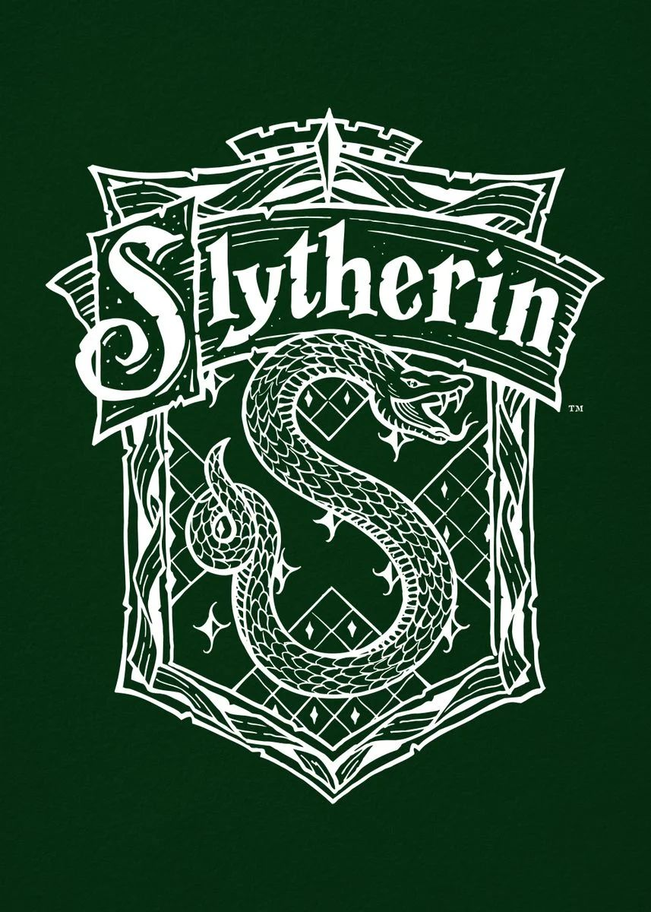

Motivated by success, Slytherins are perhaps the most unfairly
maligned of all the Hogwarts houses due to a cutthroat reputation.
They like to get ahead, whatever the cost. But while success is
certainly an admirable thing to strive for, it is when the drive for
success becomes a need for status that proves Slytherin’s less than
savory reputation.